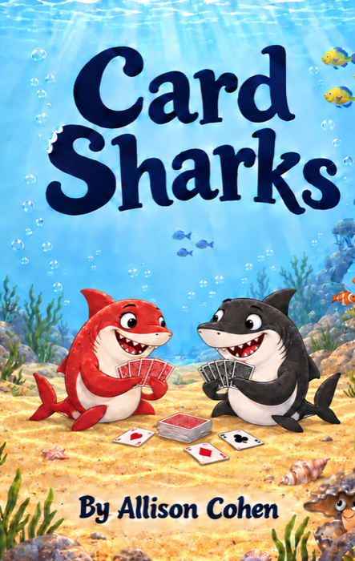
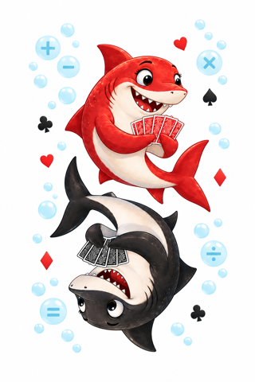

A deck of cards. A world of possibility.
Small deck.
Big math energy.
Card Sharks: Math Games for Kids
Real games. Foundational skills. A little friendly competition.

About the book
Make room for more play.
Card Sharks: Math Games for Kids is a collection of math games that can be played with a simple deck of playing cards. The games are designed to help kids master foundational math skills and, most importantly, enjoy math!
The games teach and reinforce essential skills, including addition, place value, subtraction, fractions, integers, and probability. And these aren’t glorified flash cards! They’re actual games that incorporate elements of skill, speed, luck, randomness, and, of course, a winner!
The book is perfect for kids who enjoy board games, love math, or could use a little extra practice building their foundational math skills. It’s also a wonderful addition to any classroom or math learning center.

Meet the deck
A standard deck is all you need.
While all the games can be played with a standard deck of playing cards, a proprietary deck is also available. This specially designed deck features cards numbered one through fifteen, with groups of five clearly marked to make gameplay easier.